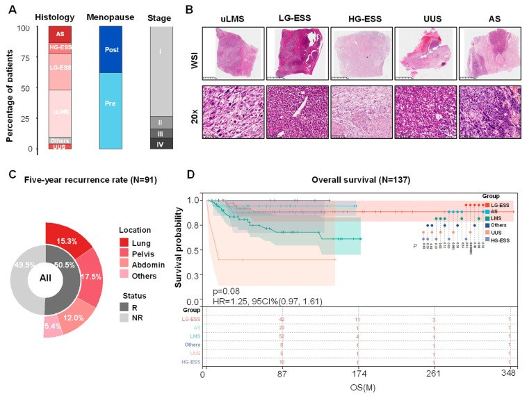
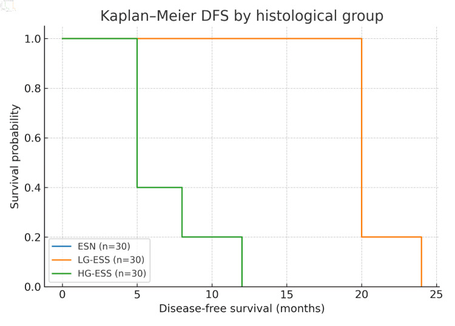
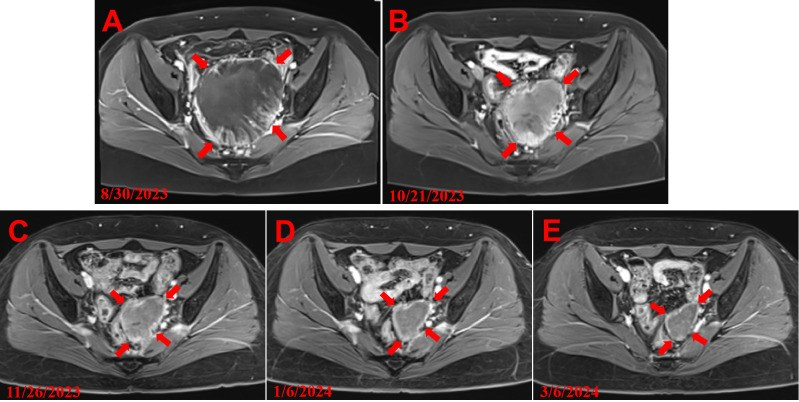
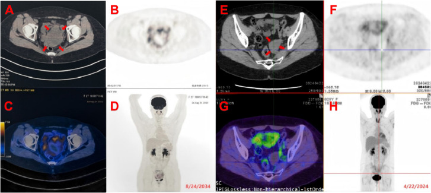
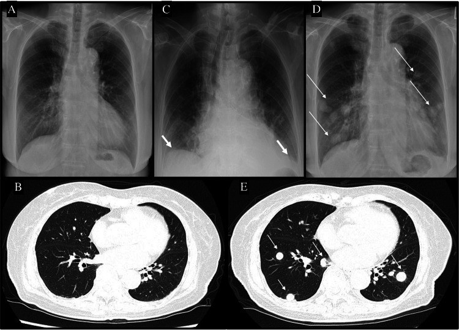
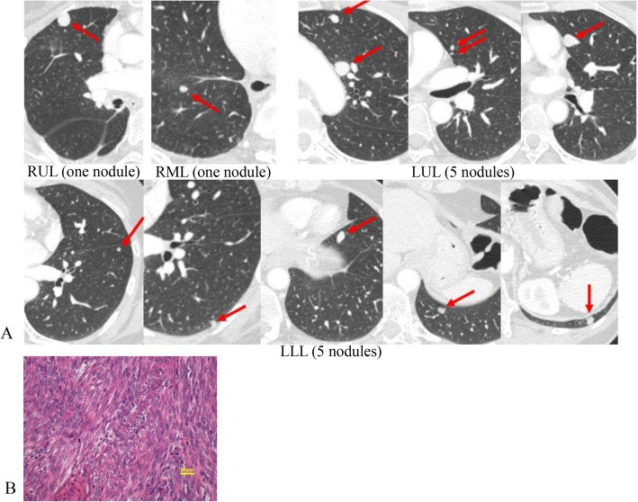
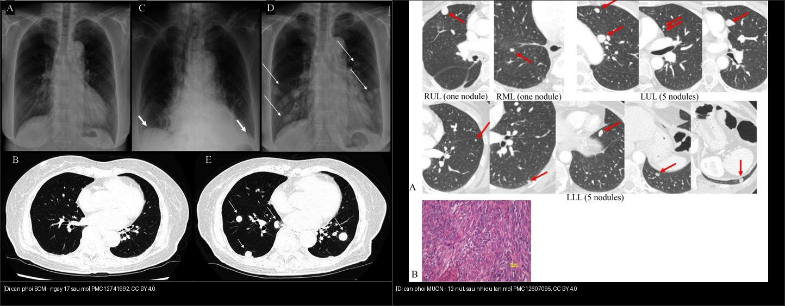
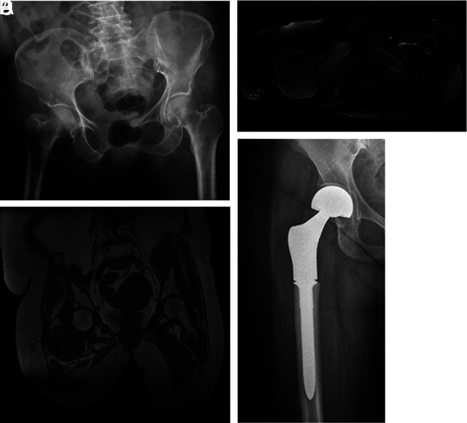
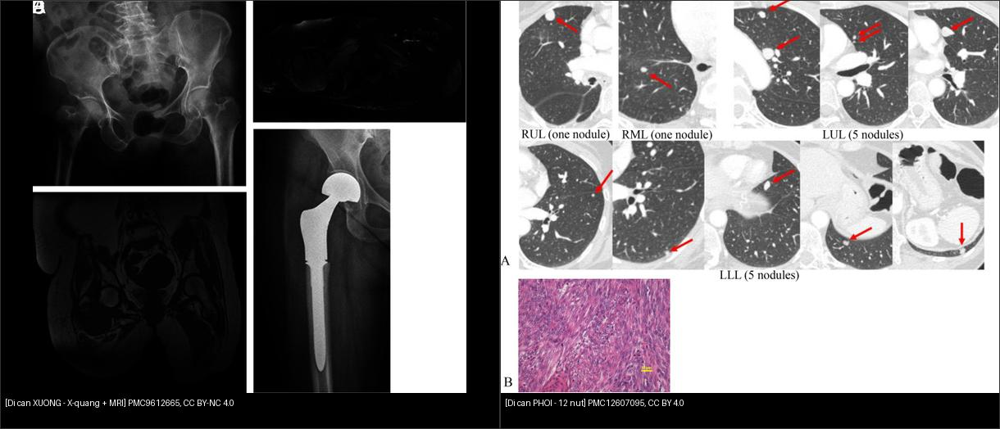
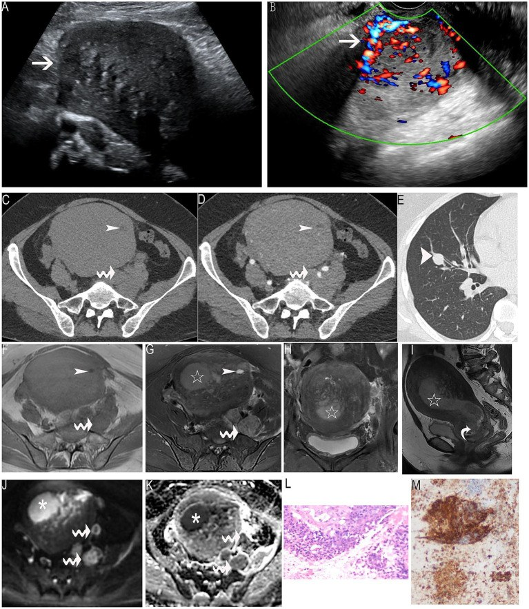

575 — Theo dõi dài hạn sau u trung mô tử cung: tái phát MUỘN ở phổi & xương
Tags: pattern:tai-phat pattern:u-trung-mo vung:tu-cung vung:phoi vung:xuong score:FIGO protocol:CT-nguc protocol:MRI-chau
Mức chắc chắn (certainty): tổng hợp y văn (literature synthesis) — cohort lớn + nhiều ca nguyên văn có mô bệnh; các con số tái phát dao động theo giai đoạn và mô học, đã ghi rõ nguồn từng số.
1. Tổng quan bệnh học – cơ chế hình ảnh
- U trung mô tử cung (uterine mesenchymal tumors) không phải một bệnh: u cơ trơn ác (uterine leiomyosarcoma, uLMS) ~38,5%, sarcoma mô đệm nội mạc độ thấp (low-grade endometrial stromal sarcoma, LG-ESS) ~29,7%, HG-ESS, sarcoma không biệt hóa (UUS), adenosarcoma. Nguồn gốc và cách lan khác nhau → lịch theo dõi khác nhau.
- uLMS xuất phát từ cơ trơn, lan chủ yếu đường máu → phổi (80% các ca di căn xa), sau đó gan (37%), xương, não. LG-ESS xâm nhập mô đệm, lan bạch huyết/peritoneum và nổi tiếng tái phát muộn (nhiều năm sau mổ), nhạy cảm hormone (ER/PR dương).
- TẠI SAO nhìn thấy trên MRI: uLMS giàu tế bào, hoại tử và xuất huyết → T2 không đồng nhất, vùng hoại tử T2 sáng, xuất huyết T1 sáng, hạn chế khuếch tán (ADC thấp, thường ≤ 0,9 × 10⁻³ mm²/s ở vùng u còn sống). LG-ESS có các dải T2 tối “giun”/“lông vũ” do dải collagen và mạch nhỏ, ngấm thuốc mạnh; mô xơ sau mổ T2 tối, không ngấm, ổn định — đây là chốt phân biệt tái phát với sẹo.
- TẠI SAO nhìn thấy trên CT: di căn phổi là nốt mô mềm 3–10 mm, bờ rõ, đa số ở ngoại vi; có thể miliary (hàng trăm nốt nhỏ) khi lan nhanh. Di căn xương là tiêu xương lytic, bờ không rõ, phá vỏ; mô mềm quanh xương trên MRI.
- Ngưỡng định lượng & số liệu nền:
- Tái phát chung sau u trung mô tử cung: 50,5% trong 5 năm (148 bệnh nhân); vị trí: khung chậu 17,5%, phổi 15,3%, ổ bụng 12,0%, khác 5,4% (Huang 2026).
- uLMS giai đoạn I: tái phát 81,3%, trung vị 12,4 tháng; LG-ESS giai đoạn I: 30%, trung vị 41,1 tháng; PFS 5 năm 31,3% vs 75%, OS 5 năm 68,5% vs 100% (Nagao 2026, n = 55).
- Sống 5 năm: LG-ESS 90,3%, uLMS 61,8%, UUS 50,0% (Huang 2026).
- 60% tái phát trong loạt 50 uLMS (Paik 2019); di căn xương: sống trung vị 15 tháng sau chẩn đoán (Öztürk Başarır 2022).
- NCCN: theo dõi mỗi 3–6 tháng trong 3 năm đầu, sau đó mỗi 6–12 tháng; 50–70% uLMS tái phát trong 2 năm đầu (Lee 2026).
- LG-ESS có thể tái phát sau 8 năm (Koh 2025: 3 nốt phổi 7–9 mm, PET FDG rất thấp, sống không bệnh 8 năm sau cắt phổi); uLMS có ca sống không bệnh 16 năm sau nhiều lần cắt di căn phổi (Kodama 2025).
2. Mẫu hình + chẩn đoán phân biệt theo vị trí (gamut)
- Phổi (hay gặp nhất): di căn uLMS (nốt đặc, đa ổ, ngoại vi), di căn LG-ESS (chậm, có thể FDG âm/ngấm rất thấp), di căn HG-ESS (nhanh, kèm hạch), lao/nấm ở người suy giảm miễn dịch, nốt lành (u hạt, hamartoma), xơ phổi sau xạ.
- Xương: tiêu xương lytic đơn độc hoặc nhiều ổ (cột sống, khung chậu, đầu dưới xương đùi); đau, gãy bệnh lý; cần MRI nếu X-quang âm.
- Gan: di căn uLMS (37%), thường đa ổ, ngấm viền; phân biệt nang/hemangioma.
- Não: hiếm nhưng là ổ di căn của uLMS; đau đầu, dấu thần kinh khu trú.
- Khung chậu/âm đạo: tái phát tại chỗ LG-ESS/HG-ESS, khối trong âm đạo, thâm nhiễm dây chằng rộng; phân biệt sẹo xơ, hẹp niệu quản do xạ, u tái phát.
- Phúc mạc/mạc nối: LG-ESS lan phúc mạc, LPD sau morcellation, carcinomatosis; báng ít gợi ý LPD.
- Hạch: LG-ESS/HG-ESS hay di căn hạch chậu/paradortic; uLMS ít gặp hơn.
3. Bảng so sánh phân biệt (ma trận đối chiếu)
| Thực thể (entity) | Hình ảnh điển hình | Chốt vào (rule-in) | Chốt loại (rule-out) | Gợi ý xác nhận |
|---|---|---|---|---|
| uLMS tái phát | Nốt phổi đặc, đa ổ, tăng nhanh; ổ bụng gan/xương; u tại chỗ T2 không đồng nhất, hoại tử | Tiền sử uLMS + nốt mới/tăng kích thước + DWI sáng | Nốt canxi hóa, ổn định ≥ 2 năm → nghĩ lành | CT ngực lát mỏng; sinh thiết nếu đơn độc/cắt được |
| LG-ESS tái phát | Khối tiểu khung/âm đạo, dải T2 tối, ngấm mạnh; di căn phổi chậm, có thể FDG thấp | Tiền sử LG-ESS + khối ngấm + T2 tối dải + tái phát sau nhiều năm | Sẹo xơ T2 tối, KHÔNG ngấm, ổn định → không phải tái phát | MRI chậu + CT ngực; ER/PR, CD10 |
| HG-ESS tái phát | Khối lớn, hoại tử, xâm lấn; di căn phổi + hạch nhanh | U lớn, hoại tử, DWI sáng mạnh, hạch bệnh lý | Tổn thương nhỏ, không ngấm, không hạch → theo dõi | Mô bệnh + YWHAE–NUTM2, BCOR |
| UUS/adenosarcoma | U không đồng nhất, xâm lấn; adenosarcoma dạng polyp trong buồng tử cung | Thành phần biểu mô + mô đệm (adenosarcoma) / không biệt hóa | U cơ trơn lành (T2 tối đều, không hạn chế khuếch tán) | Mô bệnh; adenosarcoma > 25% mô đệm |
| Di căn phổi lành tính (u hạt/lao) | Nốt nhỏ đều, có thể canxi hóa, phân bố thùy trên | Canxi hóa + bối cảnh lao + ổn định | Nốt mới tăng nhanh, không canxi → nghi di căn | So phim cũ; AFB/PCR nếu nghi lao |
| Sẹo xơ/seroma sau mổ–xạ | Vùng T2 tối, không ngấm, bờ đều; thay đổi theo thời gian rồi ổn định | Không ngấm + ổn định ≥ 6 tháng | Ngấm thuốc mới + DWI sáng + to ra → tái phát | MRI nhiều lần; PET/CT nếu còn nghi |

C: tỷ lệ tái phát 5 năm 50,5% và vị trí (khung chậu 17,5%, phổi 15,3%, ổ bụng 12,0%). D: OS theo mô học — LG-ESS tốt nhất. Nguồn: Huang T et al., Cancers 2026, PMC13255855, CC BY 4.0.
Kaplan–Meier DFS: HG-ESS giảm nhanh (trung vị 5 tháng), LG-ESS 20 tháng, ESN không tái phát trong thời gian theo dõi. Nguồn: Barbakadze L et al., J Clin Med Res 2026, PMC12861515, CC BY 4.0.4. Protocol theo dõi + hệ phân độ & ngưỡng quyết định
- Baseline sau điều trị: CT ngực–bụng–chậu có cản quang trong 3–6 tháng; MRI tiểu khung cho ESS/adenosarcoma (đánh giá thành tử cung, dây chằng, âm đạo).
- Lịch NCCN (u trung mô tử cung):
- Năm 0–3: mỗi 3–6 tháng (khám, CT ngực ± bụng–chậu).
- Năm 3–5: mỗi 6–12 tháng.
- Sau 5 năm: tiếp tục hằng năm ở LG-ESS (tái phát muộn); uLMS có thể giãn hơn nhưng không dừng hoàn toàn trước 5 năm.
- Khi nào chụp gì:
- CT ngực lát mỏng là xét nghiệm chính cho di căn phổi; X-quang ngực không đủ (bỏ sót nốt < 1 cm).
- MRI chậu khi nghi tái phát tại chỗ/âm đạo; CT bụng–chậu cho gan/phúc mạc/hạch.
- PET/CT khi CT/MRI không kết luận hoặc tìm ổ tái phát ẩn; LG-ESS có thể FDG rất thấp → PET âm không loại trừ.
- MRI cột sống/xương nếu đau xương, X-quang có tiêu xương; MRI não nếu triệu chứng thần kinh.
- Ngưỡng nghi tái phát: nốt phổi mới hoặc tăng ≥ 2 mm trên CT lát mỏng; khối chậu ngấm thuốc mới + DWI sáng; ADC ≤ 0,9 × 10⁻³ mm²/s ở vùng u còn sống gợi ý sarcoma; tăng liên tục qua 2 lần chụp quan trọng hơn một lần đo.
- Nguyên tắc điều trị khi tái phát: cắt di căn phổi nếu ít ổ, còn mổ được, bệnh ngoài phổi kiểm soát; LG-ESS dùng hormone (MPA/letrozole) sau cắt; uLMS hóa trị (doxorubicin/gemcitabine–docetaxel); HIFU/đốt sóng có thể dùng cho ổ tại chỗ không mổ được.
flowchart TD
A[Sau điều trị u trung mô tử cung] --> B{Mô học?}
B -->|uLMS| C[CT ngực + bụng–chậu mỗi 3–6 tháng × 3 năm]
B -->|LG-ESS| D[MRI chậu + CT ngực mỗi 3–6 tháng × 3 năm]
B -->|HG-ESS/UUS| E[CT ngực–bụng–chậu mỗi 3 tháng × 2–3 năm]
C --> F{Nốt mới / khối ngấm / đau xương?}
D --> F
E --> F
F -->|Không| G[Giãn dần: 6–12 tháng; LG-ESS theo dõi ≥ 10 năm]
F -->|Có| H[CT lát mỏng + MRI vùng nghi + PET/CT nếu mơ hồ]
H --> I{Xác nhận tái phát?}
I -->|Không| G
I -->|Có| J{Mổ được và bệnh ngoài phổi kiểm soát?}
J -->|Có| K[Cắt di căn / cắt khối tại chỗ + mô bệnh]
J -->|Không| L[Hóa trị / hormone / can thiệp tại chỗ / thử nghiệm]
5. Biến thể bình thường và cạm bẫy
- Sẹo xơ sau mổ/xạ là “kẻ giả danh” số 1: T2 tối, không ngấm, bờ đều, ổn định. Chỉ gọi tái phát khi ngấm thuốc mới, DWI sáng, hoặc to ra theo thời gian.
- Seroma/lymphocele sau mổ: dịch đồng nhất, không ngấm, giảm dần; đừng chọc nếu không triệu chứng.
- Nốt phổi lành (u hạt, hamartoma, nốt canxi hóa) thường < 5 mm, canxi hóa, ổn định. So phim cũ là bắt buộc.
- PET/CT dương tính giả do viêm/phẫu thuật; LG-ESS có thể FDG âm — không dùng PET để loại trừ một mình.
- Morcellation làm tăng gieo rắc phúc mạc/LPD; theo dõi phúc mạc kỹ ở người từng morcellation.
- Tái phát muộn sau 10 năm vẫn xảy ra ở LG-ESS; không discharge bệnh nhân chỉ vì đã qua 5 năm.
- Cạm bẫy mặt cắt: nốt phổi sát màng phổi có thể giả “dày màng phổi”; khối chậu sau xạ dễ bị che bởi xơ hậu xạ — cần MRI đa chuỗi + DWI, không chỉ CT.
6. Tự lượng giá — Blind Quiz
Ca 1 — Nữ 28 tuổi, tiền sử sarcoma mô đệm nội mạc độ thấp đã mổ; 3 năm sau tái phát khối tiểu khung, từ chối mổ.

- Câu hỏi: Mô tả khối? Chuỗi ảnh A→E nói lên điều gì? Chẩn đoán?
Bấm để hiện đáp án
- Findings: khối lớn ở tiểu khung, T2 không đồng nhất, bờ không đều, xâm lấn mô xung quanh; các mốc thời gian 8/2023 → 3/2024 cho thấy kích thước thay đổi sau điều trị.
- Chẩn đoán: tái phát LG-ESS (tiền sử mô học + khối ngấm, T2 trung gian, hạn chế khuếch tán).
- Ý nghĩa: LG-ESS có thể tái phát sau nhiều năm và khối tiểu khung là ổ tái phát tại chỗ; cần MRI chậu + CT ngực, không chỉ CT.
- Nguồn: Chen H et al., Front Oncol 2025, PMC12683335, CC BY 4.0 (Fig 2).

Ca 2 — Nữ 87 tuổi, uLMS giai đoạn IB, mổ cắt tử cung; ngày 17 sau mổ khó thở.

- Câu hỏi: So sánh A–B với D–E? Tốc độ lan gợi ý gì? Chẩn đoán?
Bấm để hiện đáp án
- Findings: trước mổ X-quang và CT phổi bình thường (A, B); ngày 4 có tràn dịch màng phổi độ 2 (C); ngày 17 nhiều nốt hai phổi + hạch rốn phổi/trung thất (D, E).
- Chẩn đoán: di căn phổi bùng phát sớm sau mổ uLMS — lan theo đường máu, có thể nhanh bất thường ở người suy dinh dưỡng.
- Phản biện: đây là ca cực đoan (POD17); không dùng để kết luận mọi uLMS đều lan nhanh như vậy, nhưng chứng minh CT ngực baseline và theo dõi sớm là bắt buộc.
- Nguồn: Banno H et al., Cureus 2025, PMC12741992, CC BY 4.0 (Fig 2).
Ca 3 — Nữ 45 tuổi, uLMS đã mổ 16 năm trước; nhiều đợt cắt di căn phổi, nay CT ngực kiểm tra.

- Câu hỏi: Đếm/định vị các nốt? Vì sao bệnh nhân vẫn sống lâu? Khi nào cắt phổi?
Bấm để hiện đáp án
- Findings: 12 nốt di căn hai phổi (RUL 1, RML 1, LUL 5, LLL 5), kích thước vài mm đến ~1 cm; không có di căn ngoài phổi.
- Chẩn đoán: di căn phổi uLMS tái phát nhiều đợt, mô bệnh xác nhận sarcoma.
- Vì sao sống lâu: bệnh giới hạn ở phổi, cắt được nhiều lần, chức năng phổi đủ — cắt di căn lặp lại có thể kéo dài sống còn (ca này sống không bệnh 5 năm 8 tháng sau lần cắt cuối, 16 năm sau mổ chính).
- Chỉ định cắt: ít ổ, còn mổ được, bệnh ngoài phổi kiểm soát, chức năng phổi cho phép; không cắt nếu di căn lan tỏa.
- Nguồn: Kodama K et al., Gen Thorac Cardiovasc Surg Cases 2025, PMC12607095, CC BY 4.0 (Fig 4).

Ca 4 — Nữ 69 tuổi, tiền sử uLMS, đau đùi phải; X-quang và MRI xương.

- Câu hỏi: Dấu hiệu trên X-quang? MRI bổ sung gì? Tiên lượng?
Bấm để hiện đáp án
- Findings: X-quang — tiêu xương vùng liên mấu chuyển/đầu dưới xương đùi phải, bờ không rõ; MRI T2 — ổ tăng tín hiệu, T1 — nhiều ổ giảm tín hiệu hai bên; sau đó thay khớp háng nhân tạo.
- Chẩn đoán: di căn xương của uLMS (đơn độc hoặc nhiều ổ).
- Tiên lượng: sống trung vị 15 tháng sau chẩn đoán di căn xương; cắt rộng ổ đơn độc giúp giảm đau và có thể kéo dài sống còn.
- Nguồn: Öztürk Başarır Z et al., Acta Orthop Traumatol Turc 2022, PMC9612665, CC BY-NC 4.0 (Fig 1).

Ca 5 — Nữ 51 tuổi, ra máu âm đạo, khối bụng lớn; CT thấy nốt phổi, hạch chậu.

- Câu hỏi: Tìm khối nguyên phát và di căn trên các panel? Vì sao gọi giai đoạn IVB? Mô học nào?
Bấm để hiện đáp án
- Findings: (A–B) siêu âm khối 8 × 12 × 17 cm không đồng nhất, tăng sinh mạch; (C–D) CT chậu — khối tử cung 47 HU, hoại tử, hạch chậu trái; (E) CT ngực — nốt phổi (mũi tên dày); (F–I) MRI T1/T2 — khối xâm lấn cơ tử cung, dải tín hiệu thấp; (J–K) DWI/ADC hạn chế khuếch tán; (L–M) H&E/IHC.
- Chẩn đoán: HG-ESS giai đoạn IVB (T3bN1M1) — di căn phổi + hạch chậu.
- Vì sao: HG-ESS lan nhanh, di căn xa sớm; MRI DWI/ADC đánh giá độ tế bào và xâm lấn, CT ngực tìm di căn.
- Nguồn: Tan H, Zhang T. Front Med 2025, PMC12436435, CC BY 4.0 (Fig 1).
Bài liên quan chéo
- 500 – Tổng quan Vú & Sản phụ khoa
- 526 – Sarcoma tử cung vs u xơ
- 527 – U mô đệm nội mạc tử cung
- 518 – Morcellation & LPD
- 577 – Theo dõi & phát hiện tái phát ung thư phụ khoa
Không dùng để chẩn đoán độc lập khi chưa có người hướng dẫn.